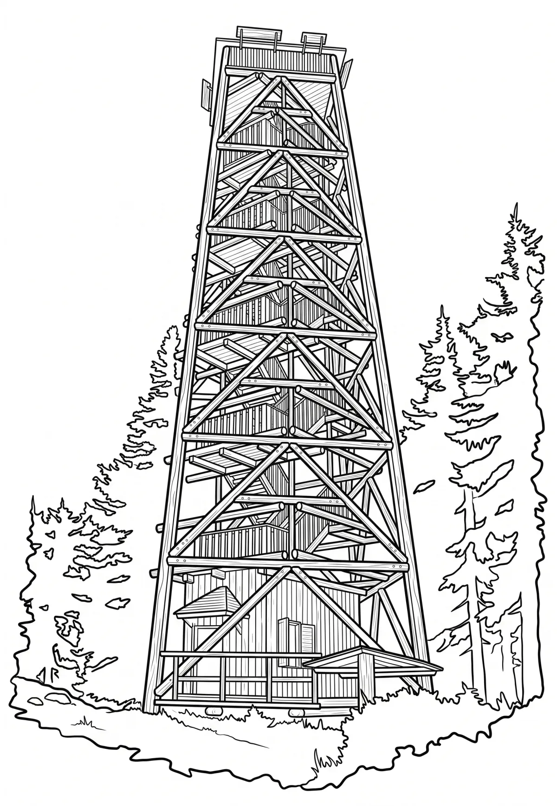

Rozhledna Boubín
Jihočeský kraj · 1362 m n. m.

technická památka · #057
Rozhledna Boubín se nachází na stejnojmenné hoře na Šumavě, leží na katastrálním území Včelná pod Boubínem (Obecní úřad Buk v okrese Prachatice). V současnosti se na vrcholové plošině Boubína v nadmořské výšce 1360 m nachází uzavřená dřevěná rozhledna postavená v letech 2004–2005. V 19. a 20.